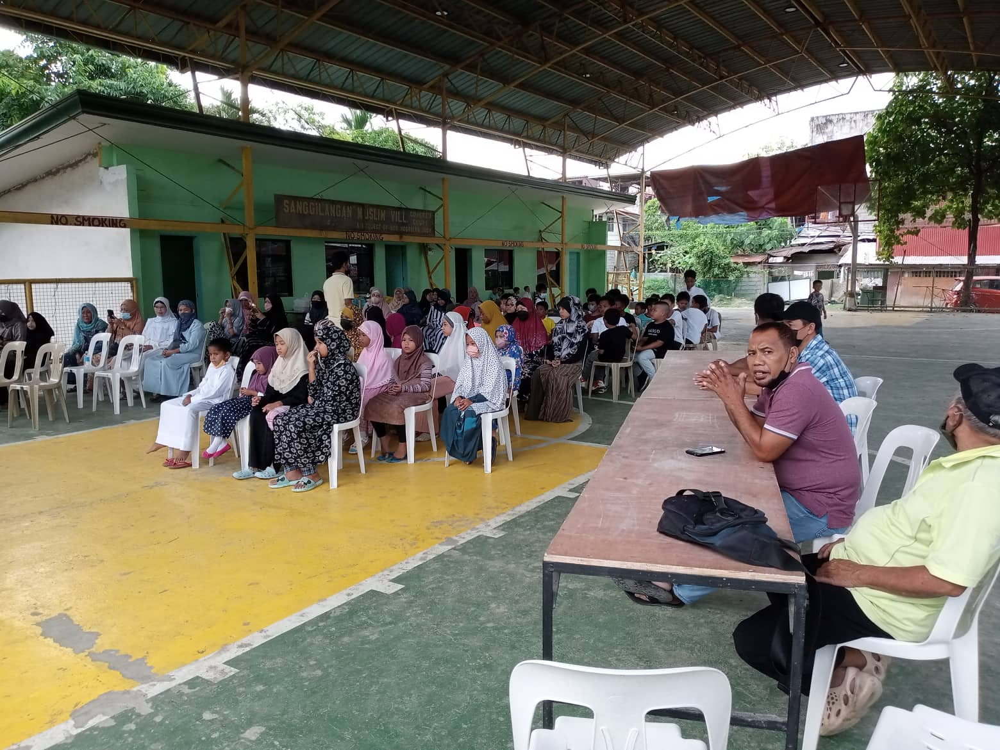
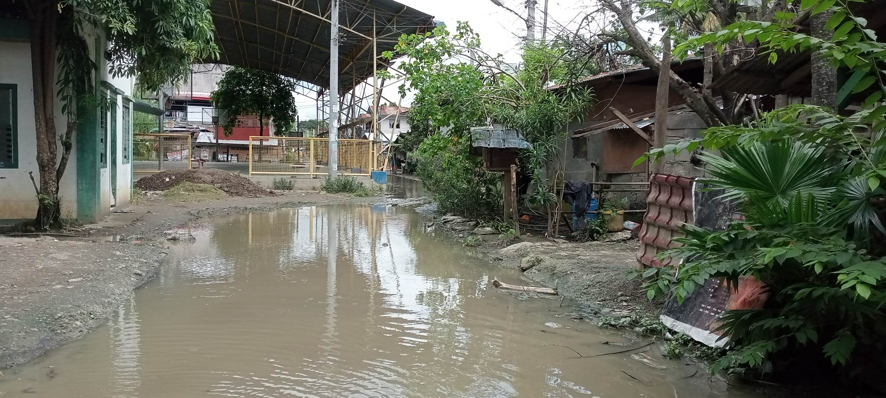

BACKGROUND
 The partner institution and its students have a long and extensive history of the area around the partner institution and its struggle with the heavy and dangerous flooding resulting to the freezing of progres and indirectly damaging the long term education of the wonderful students of the partner institution, and this complication has been a constant scenes the very conception of the partner institution and further back 2005-1999 .this phenomenon as quoted (by many news outlets such as ABC, ABS-CBN and GMA ) is intensified by the mass deforestation on mountain sides and cliff edges leading to water from overflowing lake and heavy rainfall to build up and cause flooding in the community and the better part of the partner institution. To state the oblivious, this is a problem that will only exponentially grow if not addressed and accounted for and will directly lead to damages and the displacement of people which negatively affect the partner institution and its students as a whole. From what the group have gathered from info we were shared with or found personally, we found a deep and profound admiration of the triumph and unwavering determination of the Madrasah partner institution and we found it very easy to find the struggles of the staff of the Madrasah institute to be a noble and brave cause for the student of the partner institution it is truly an inspiring example of the sacrifices of the teachers of any school must undergo for there love of education and to better the world by giving the next generations the tools they need to succeed in the future it is a neer thankless job yet they brave on the stress and hardships of the world.
SIGNIFICANCE
The chosen project proposal is significant to our partner institution, Madrasah, because we’re able to provide solutions to their current problem which is flooding due to the unpredictable weather. As a school, they need to be able to provide a safe and clean environment for their students but due to their finances, they aren’t able to make ends meet so we wanted to be able to help them with the resources that we have access to. Our sustainable solutions will also benefit the whole community and not just the institution itself. This project will also showcase the students’ take-aways from their lessons in school and sets an example for others to follow. This project will also bring more attention to the institution and get supported by more beneficiaries.
PROBLEM IDENTIFICATION
 Based on our research we found a news report addressing the heavy storms and flooding near the location of the partner institution. The news was found in the youtube channel named ANC 24/7 where it was published in July 12, 2020. The contents in the said video shows a good example of what the partner institution is facing annually, and it is a disturbing truth that continuous to cripple the ability of the partner institution to conduct education and other tasks, in turn running the risk of disrepair to the institutions properties.
PROJECT PROPOSAL
The problem that our project aims to solve is the flooding around the partnered institution’s area. It is important to solve the partnered institution’s problem as it affects the life within their community— As most people are well aware, flooding has immediate effects on the institution’s capability to teach their education, water quality, loss of life, property damage, destruction of crops, loss of livestock, and poor health due to waterborne infections. Our project can help solve this problem as it specializes in solving flooding. Green technology, our project, involves planting — Trees and plants can help in the blockage of floods. Not only do trees keep the area and forested areas from flooding. Moreover, trees significantly reduce the harm caused by flooding in specific areas. Consider this: Concrete does little to absorb or stop the rain. Water does not penetrate pavement; it simply flows off of it. On the other hand, soil and trees can function as a sponge. The advantages of trees go beyond their ability to reduce water flow. Trees also clean and enhance the quality of the water. Trees can prevent poisons and contaminants from entering drinking water by releasing them as a gas through their leaves when they absorb water through their roots.